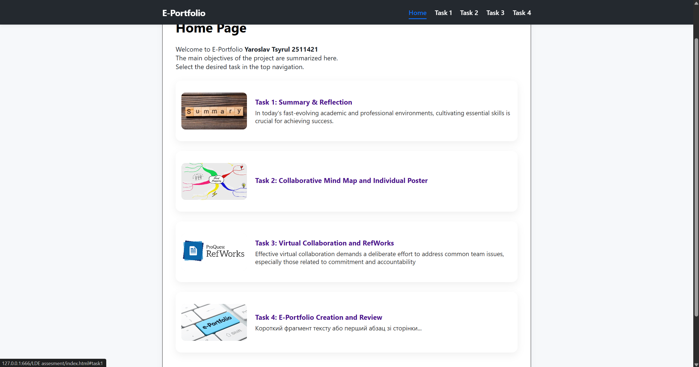
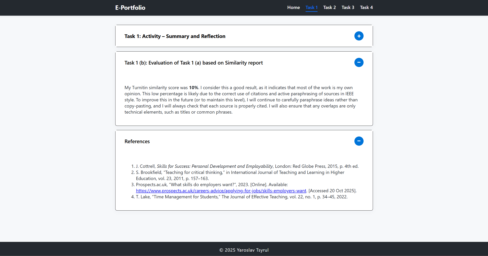
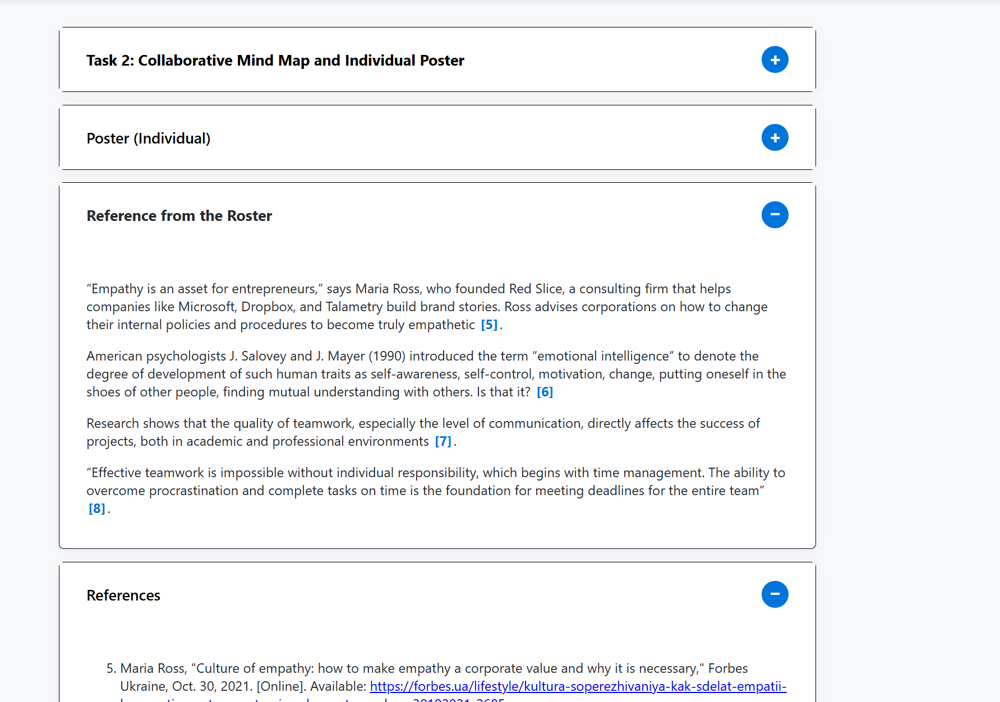
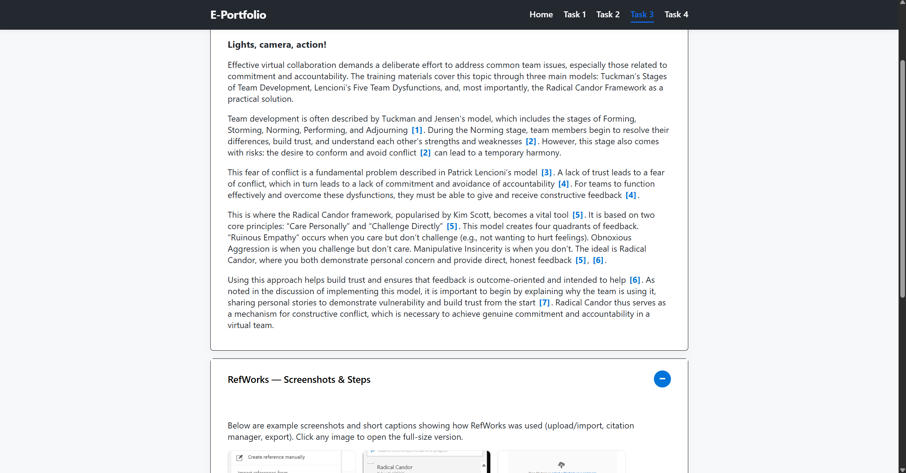

<section>
  <div>
    <div class="task-card1">
      <div class="card-header" onclick="toggleCard(this)">
        <h1>Task 4: E-Portfolio Illustrative Review</h1>
        <button class="collapse-btn">−</button>
      </div>
      <div class="card-content">
        <h2>Tool Choice: Custom Site (HTML/CSS/JS)</h2>

        <p>
          To create this e-portfolio, I chose to build my own website from scratch using HTML, CSS, and JavaScript, rather than using a builder platform like Wix or Google Sites.
        </p>

        <h3>Why I chose this approach</h3>
        <ul>
          <li><strong>Complete Design Control:</strong> Building from scratch gave me absolute control over every aspect of the visual design and structure, allowing me to create a clean, professional, and unique look (see <code>style.css</code>).</li>
          <li><strong>Demonstration of Technical Skills:</strong> Since my field of study is technology-related, building the site demonstrates practical web development skills — a useful artifact for the portfolio itself.</li>
          <li><strong>Speed and Functionality (SPA):</strong> I implemented the site as a Single Page Application. The navigation is handled in <code>main.js</code>, which dynamically loads <code>Home.html</code>, <code>Task1.html</code>, etc., into the main container so the page does not fully reload when switching sections. This results in fast, fluid navigation and a more app-like experience.</li>
        </ul>

        <h3>Implementation details</h3>
        <p>
          Key files and responsibilities:
        </p>
        <ol>
          <li><code>index.html</code> — root shell and navigation (header, main #app, footer).</li>
          <li><code>style.css</code> — global styles, previews, task-card styling, responsive rules and the lightbox CSS.</li>
          <li><code>main.js</code> — SPA loader, preview population, reference link handlers, collapse/toggle logic, and the lightbox JS.</li>
          <li><code>Home.html, Task1.html, Task2.html, Task3.html, Task4.html</code> — content fragments dynamically loaded into <code>#app</code>.</li>
        </ol>

        <h3>Conclusion</h3>
        <p>
          Building the e-portfolio from scratch using HTML/CSS/JS fulfilled the assignment requirements and produced a polished, fast, and extensible portfolio site.
        </p>
      </div>
    </div>

    <!-- Evidence: New screenshot gallery with lightbox -->
    <div class="task-card1">
      <div class="card-header" onclick="toggleCard(this)">
        <h2>Evidence: Screenshots & Notes</h2>
        <button class="collapse-btn">−</button>
      </div>
      <div class="card-content">
        <p>Below are four screenshots — one for each main page. Click any image to open it in a lightbox.</p>

        <div class="screenshot-gallery" aria-label="Four page screenshots">
          <figure>
            <a href="images/home-screenshot.png" data-caption="Home page — task previews" aria-label="Open Home screenshot">
              
            </a>
            <figcaption>Home page — task previews</figcaption>
          </figure>

          <figure>
            <a href="images/task1-screenshot.png" data-caption="Task 1 — summary & reflection" aria-label="Open Task1 screenshot">
              
            </a>
            <figcaption>Task 1 — summary & reflection</figcaption>
          </figure>

          <figure>
            <a href="images/task2-screenshot.png" data-caption="Task 2 — mind map & poster" aria-label="Open Task2 screenshot">
              
            </a>
            <figcaption>Task 2 — mind map & poster</figcaption>
          </figure>

          <figure>
            <a href="images/task3-screenshot.png" data-caption="Task 3 — RefWorks & report" aria-label="Open Task3 screenshot">
              
            </a>
            <figcaption>Task 3 — RefWorks & report</figcaption>
          </figure>
        </div>
      </div>
    </div>
  </div>
</section>